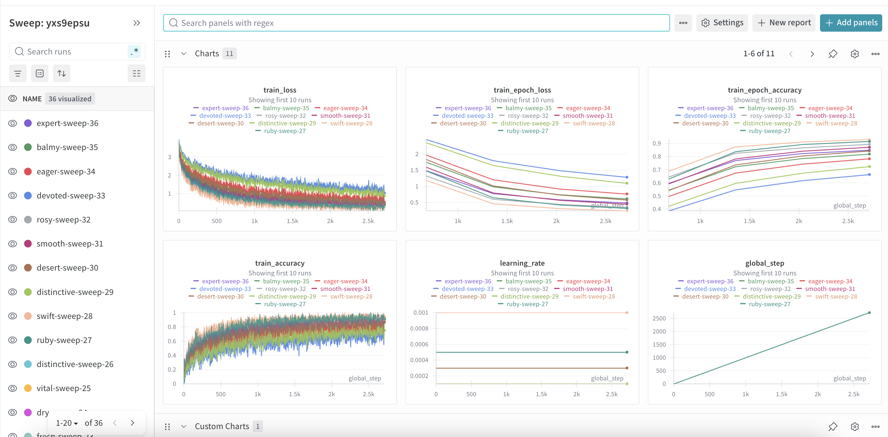
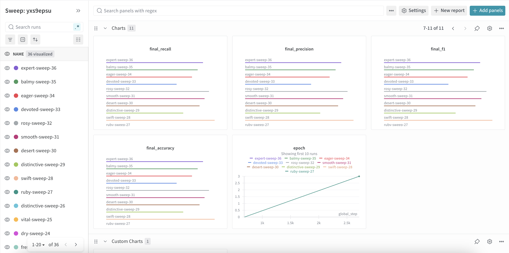
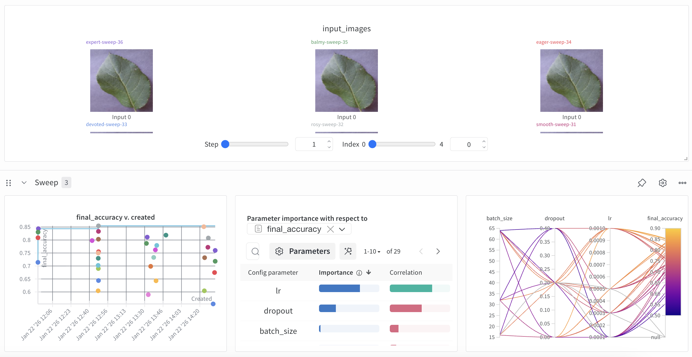
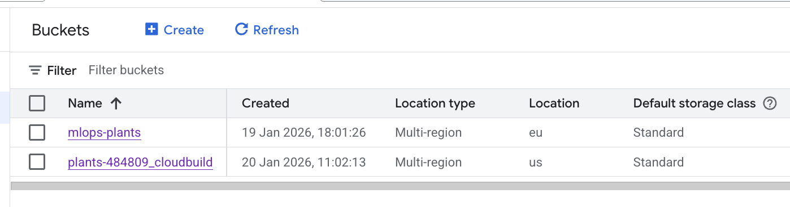
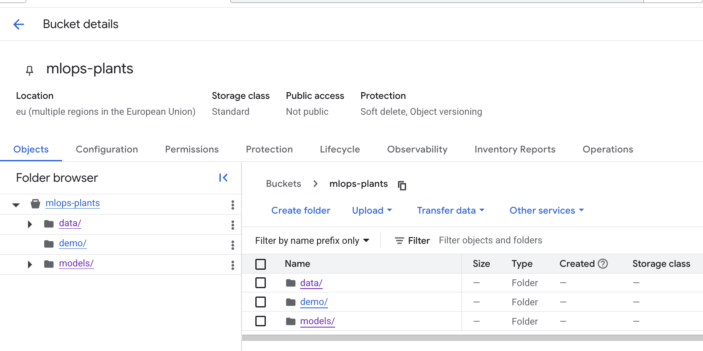
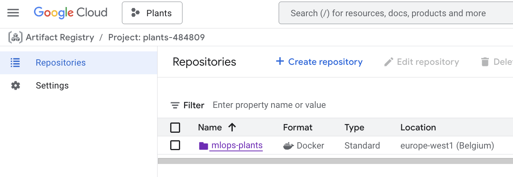
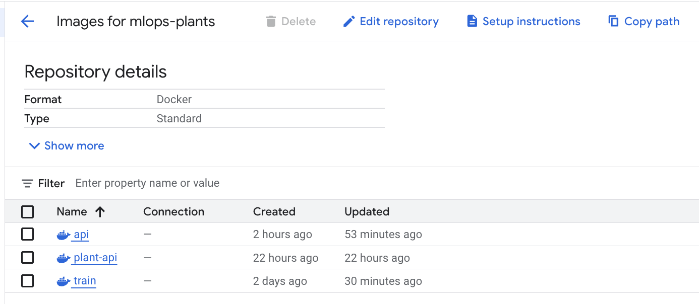
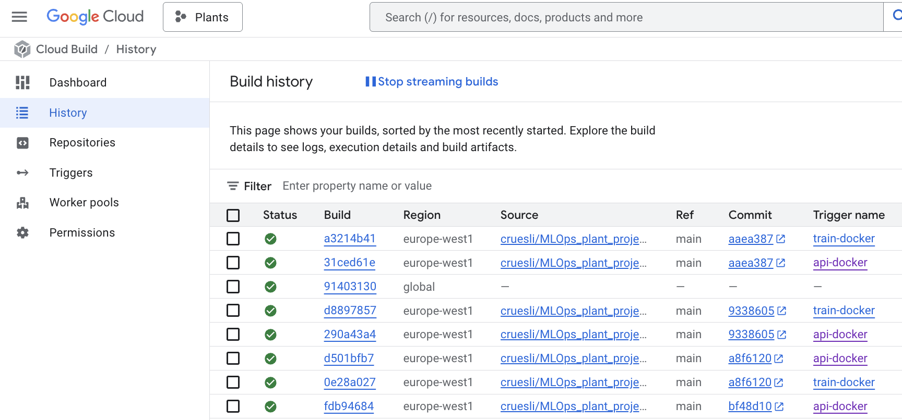
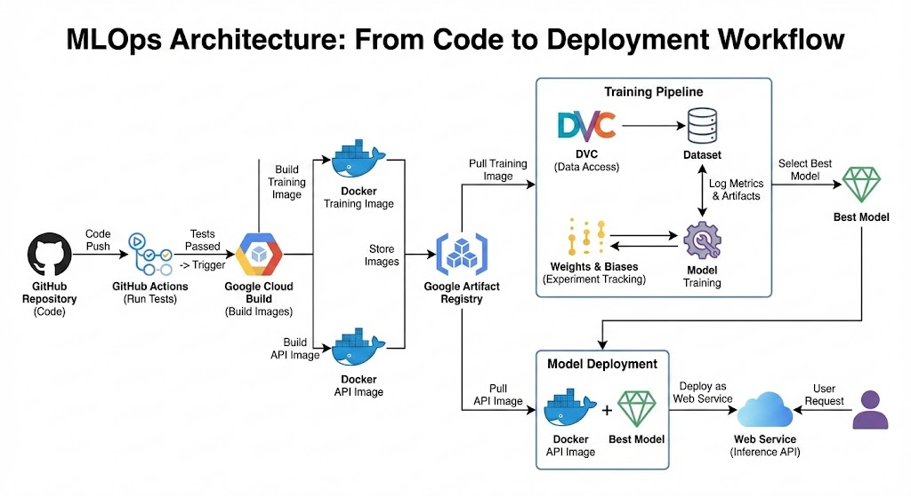

Operations
This is the report template for the exam. Please only remove the text formatted as with three dashes in front and behind like:
--- question 1 fill here ---
Where you instead should add your answers. Any other changes may have unwanted consequences when your report is
auto-generated at the end of the course. For questions where you are asked to include images, start by adding the image
to the figures subfolder (please only use .png, .jpg or .jpeg) and then add the following code in your answer:

In addition to this markdown file, we also provide the report.py script that provides two utility functions:
Running:
bash
python report.py html
Will generate a .html page of your report. After the deadline for answering this template, we will auto-scrape
everything in this reports folder and then use this utility to generate a .html page that will be your serve
as your final hand-in.
Running
bash
python report.py check
Will check your answers in this template against the constraints listed for each question e.g. is your answer too short, too long, or have you included an image when asked. For both functions to work you mustn't rename anything. The script has two dependencies that can be installed with
bash
pip install typer markdown
or
bash
uv add typer markdown
The checklist is exhaustive which means that it includes everything that you could do on the project included in the curriculum in this course. Therefore, we do not expect at all that you have checked all boxes at the end of the project. The parenthesis at the end indicates what module the bullet point is related to. Please be honest in your answers, we will check the repositories and the code to verify your answers.
data.py file such that it downloads whatever data you need and preprocesses it (if necessary) (M6)model.py and a training procedure to train.py and get that running (M6)requirements.txt/requirements_dev.txt files or keeping your
pyproject.toml/uv.lock up-to-date with whatever dependencies that you are using (M2+M6)pep8) while doing the project (M7)Enter the group number you signed up on
Answer:
90
Enter the study number for each member in the group
Example:
sXXXXXX, sXXXXXX, sXXXXXX
Answer:
s224174, s224186, s224188
Did you end up using any open-source frameworks/packages not covered in the course during your project? If so which did you use and how did they help you complete the project?
Recommended answer length: 0-200 words.
Example: We used the third-party framework ... in our project. We used functionality ... and functionality ... from the package to do ... and ... in our project.
Answer:
All of the frameworks/packages that were used (see pyproject.toml) was included in the curriculum or mentioned in lectures.
In the following section we are interested in learning more about you local development environment. This includes how you managed dependencies, the structure of your code and how you managed code quality.
Explain how you managed dependencies in your project? Explain the process a new team member would have to go through to get an exact copy of your environment.
Recommended answer length: 100-200 words
Example: We used ... for managing our dependencies. The list of dependencies was auto-generated using ... . To get a complete copy of our development environment, one would have to run the following commands
Answer:
We used uv for managing our dependencies. The list of dependencies is defined in the pyproject.toml file, separating production and development packages. The uv.lock file is auto-generated and committed to version control, containing the exact versions of all dependencies and their sub-dependencies. This ensures that every team member and every build environment is perfectly reproducible and consistent. We also pinned Python version via uv, documented setup steps in README, and verified sync on both macOS and Linux.
To get a complete copy of our development environment, a new team member would have to install uv
curl -LsSf https://astral.sh/uv/install.sh | sh
And then sync: uv sync --dev
We expect that you initialized your project using the cookiecutter template. Explain the overall structure of your code. What did you fill out? Did you deviate from the template in some way?
Recommended answer length: 100-200 words
Example: From the cookiecutter template we have filled out the ... , ... and ... folder. We have removed the ... folder because we did not use any ... in our project. We have added an ... folder that contains ... for running our experiments.
Answer:
We deviated a bit from a typical template by using uv (more modern approach) for dependency management, defining them in pyproject.toml and locking versions in uv.lock for reproducibility.
We added dockerfiles for containerizing our training and API services, and integrated wandb for experiment tracking. Furthermore, we established Continuous Integration workflows in .github/workflows for automated linting and testing. We added a cloudbuild folder for the cloudbuild related YAML files. We also added some more scripts in the scripts folder, to run to get demo examples for the API app and to extract the best performing model from GCS.
The core code lives under src/plants with modules for data handling, modeling, training, evaluation, visualization, and the FastAPI app. We kept configs/ for Hydra defaults, experiments, and sweeps, and outputs/ for generated runs. Data is tracked via DVC (data.dvc and .dvc/), and we retained tests/, docs/, and reports/ for verification and reporting.
Did you implement any rules for code quality and format? What about typing and documentation? Additionally, explain with your own words why these concepts matters in larger projects.
Recommended answer length: 100-200 words.
Example: We used ... for linting and ... for formatting. We also used ... for typing and ... for documentation. These concepts are important in larger projects because ... . For example, typing ...
Answer:
Yes, we implemented several rules for code quality, format, typing etc.
We used ruff for both code formatting and quality linting, which enforces adherence to Python's PEP8 style guide and other best practices. This is configured in the pyproject.toml file and automatically enforced in our CI/CD pipeline, as defined in .github/workflows/linting.yaml, which runs ruff format and ruff check on every pull request.
For typing, we used Python's type hints throughout the repo to specify the expected types for function arguments and return values (e.g., def forward(self, x: torch.Tensor) -> torch.Tensor:). This makes the code more explicit and easier to understand.
These concepts are critical in projects: * Maintainability: Consistent formatting and quality rules (ruff enforcing PEP8) make the code easier to read and maintain for any team member, at any time. * Reliability: Typing helps catch a whole class of bugs before the code is even run, which is crucial for preventing unexpected errors in production. * Collaboration: Clear documentation ensures that all team members, new and old, can understand how different parts of the project work and how to use them correctly, which greatly improves efficiency and reduces onboarding time.
In the following section we are interested in how version control was used in your project during development to corporate and increase the quality of your code.
How many tests did you implement and what are they testing in your code?
Recommended answer length: 50-100 words.
Example: In total we have implemented X tests. Primarily we are testing ... and ... as these the most critical parts of our application but also ... .
Answer:
There are 19 test functions across 8 test files. They cover: MyDataset creation, indexing, saved tensor shapes/metadata, valid/invalid targets, and missing/corrupt files; end-to-end evaluate() on fixture data with a dummy checkpoint; model init and forward output shape; get_data.sh download/extract to non-empty data/raw (skipped if Kaggle credentials are missing); _train_model reproducibility (two runs yield identical weights); end-to-end visualize() that produces an embeddings figure; unit-style API tests for the FastAPI endpoints; and live integration tests against the deployed API.
What is the total code coverage (in percentage) of your code? If your code had a code coverage of 100% (or close to), would you still trust it to be error free? Explain you reasoning.
Recommended answer length: 100-200 words.
Example: The total code coverage of code is X%, which includes all our source code. We are far from 100% coverage of our ** code and even if we were then...*
Answer:
Our total code coverage is 48%, which includes all our source code. This is far from 100% coverage, but even if it was this wouldn’t tell us anything about the quality of our tests. We maybe should have implemented more tests, but we believe that the current tests we have tests the most important aspects and functions of our project. Including more would have made our project even more robust. The main improvements we could have made are to our train_test and data_test. Here we have 58% and 38% coverage respectively, and increasing this could improve the robustness of the backbone of our project.
Did you workflow include using branches and pull requests? If yes, explain how. If not, explain how branches and pull request can help improve version control.
Recommended answer length: 100-200 words.
Example: We made use of both branches and PRs in our project. In our group, each member had an branch that they worked on in addition to the main branch. To merge code we ...
Answer:
Yes we used git and github for version control. For each feature we were developing we created a new branch, which were then merged upon completion of the feature. To merge a branch into main we used pull requests which checked if the following requirements were fulfilled: The branch has to be up to date with main, and all our unit tests needed to be passed on macos, windows and ubuntu for python 3.13. Pull requests were set up using github’s rulesets. This was done to make sure that the current version is always working, and limit the possibility of bad code being pushed to main.
Did you use DVC for managing data in your project? If yes, then how did it improve your project to have version control of your data. If no, explain a case where it would be beneficial to have version control of your data.
Recommended answer length: 100-200 words.
Example: We did make use of DVC in the following way: ... . In the end it helped us in ... for controlling ... part of our pipeline
Answer:
We did make use of DVC when storing data on the cloud. However we did not really make use of this as we are using a kaggle dataset which doesn’t receive any updates. Because of this we did not see it necessary to use DVC to ensure version control of our data, and instead relied on local copies of the data. DVC would be beneficial to use if we had a dataset which was continuously changing. Then we could use DVC to pull the data from the cloud whenever the model was trained or tested, to always use the current version of the data.
Discuss you continuous integration setup. What kind of continuous integration are you running (unittesting, linting, etc.)? Do you test multiple operating systems, Python version etc. Do you make use of caching? Feel free to insert a link to one of your GitHub actions workflow.
Recommended answer length: 200-300 words.
Example: We have organized our continuous integration into 3 separate files: one for doing ..., one for running ... testing and one for running ... . In particular for our ..., we used ... .An example of a triggered workflow can be seen here:
Answer:
Our continuous integration is organized into three GitHub Actions workflows: unit testing, linting/formatting, and automated pre-commit hook updates. The unit test workflow (‘Unit Tests’) runs on every push and pull request to ‘main’. It executes ‘pytest’ with coverage enabled across a full matrix of operating systems ‘ubuntu-latest, windows-latest, and macos-latest’ using ‘Python 3.13’. This matrix coverage gives us early signals about cross-platform issues, while the coverage report highlights any untested code paths. The linting workflow (‘Code linting’) also triggers on push and pull request to ‘main’. It installs dependencies with ‘uv’, then runs ‘ruff format’ followed by ‘ruff check’ on’ ubuntu-latest’ with ‘Python 3.13’. These steps surface formatting and style problems early; they are currently marked ‘continue-on-error’, so contributors still get feedback even if lint warnings appear, without blocking the pipeline. A scheduled ‘Pre-commit auto-update’ workflow runs weekly (and can be triggered manually) to refresh our pre-commit hook versions and open a pull request with the updates. This keeps tooling current without manual maintenance. All workflows use ‘astral-sh/setup-uv@v7’ with ‘enable-cache: true’, letting ‘uv’ leverage GitHub Actions caching to speed dependency installation across runs. Combined with branch protection rules, test and lint results must be green before merging to ‘main’, helping keep the main branch stable, dependencies up to date, and code style consistent with PEP 8 guidelines.
In the following section we are interested in learning more about the experimental setup for running your code and especially the reproducibility of your experiments.
How did you configure experiments? Did you make use of config files? Explain with coding examples of how you would run a experiment.
Recommended answer length: 50-100 words.
Example: We used a simple argparser, that worked in the following way: Python my_script.py --lr 1e-3 --batch_size 25
Answer:
Experiments are configured with Hydra/OmegaConf YAML files in \texttt{configs/}. \texttt{default_config.yaml} composes the \texttt{experiments}, \texttt{dataloader}, and \texttt{model} groups, and files like \texttt{plant.yaml} define hyperparameters (\texttt{lr}, \texttt{batch_size}, \texttt{epochs}) and W\&B settings. The training entrypoint \texttt{train.py} uses \texttt{hydra.main(...)}. Run defaults with \texttt{train.py}, or override config values: \begin{verbatim} train.py experiments=plant dataloader=default model=default \ experiments.lr=1e-3 experiments.batch_size=64 \end{verbatim}
Reproducibility of experiments are important. Related to the last question, how did you secure that no information is lost when running experiments and that your experiments are reproducible?
Recommended answer length: 100-200 words.
Example: We made use of config files. Whenever an experiment is run the following happens: ... . To reproduce an experiment one would have to do ...
Answer:
When training starts, the entrypoint (\texttt{train.py}) prints the fully resolved configuration and, when enabled, logs the same configuration to Wandb. This ensures that the exact hyperparameters, data paths, and settings used in each run are fully recorded. To further support reproducibility, we use a fixed random seed (\texttt{experiments.seed}) and store trained models as wandb artifacts together with their evaluation metrics. Dataset preprocessing is handled separately, and the path to the processed data and metadata is included directly in the configuration, ensuring that all runs reference the same preprocessed tensors. To reproduce a specific experiment, it is sufficient to rerun \texttt{train.py} with the same configuration selections and overrides (for example, \texttt{experiments=class} and any overrides such as \texttt{experiments.lr=\dots}) while using the same processed dataset and metadata.
Upload 1 to 3 screenshots that show the experiments that you have done in W&B (or another experiment tracking service of your choice). This may include loss graphs, logged images, hyperparameter sweeps etc. You can take inspiration from this figure. Explain what metrics you are tracking and why they are important.
Recommended answer length: 200-300 words + 1 to 3 screenshots.
Example: As seen in the first image when have tracked ... and ... which both inform us about ... in our experiments. As seen in the second image we are also tracking ... and ...
Answer:
The experiments are tracked using W&B and mainly focus on understanding training dynamics, model performance, and the effect of hyperparameters through a sweep.
In the first screenshot, We track training loss, epoch-wise loss, and training accuracy over global steps. These metrics are essential for diagnosing optimization behavior. The training loss curves show how quickly and how stably the model converges, while the epoch loss provides a smoothed, high-level view that makes it easier to compare different runs. Training accuracy complements loss by indicating whether improvements in loss actually translate into better predictions. Monitoring both is important since loss alone can decrease without meaningful gains in accuracy.

The second screenshot focuses on final evaluation metrics, including final accuracy, precision, recall, and F1-score. These metrics are critical because they summarize model performance after training and capture different aspects of classification quality. Precision and recall are especially important when class imbalance is present, while the F1-score balances the two and serves as a robust single-number metric for comparison across runs. Final accuracy is tracked for interpretability and consistency with training metrics.

The third screenshot highlights hyperparameter sweeps and analysis. We log learning rate, batch size, and dropout, and visualize their relationship to final accuracy using parameter importance plots and parallel coordinates. This allows us to identify which hyperparameters have the strongest influence on performance and detect interactions between them. Additionally, logging example input images ensures data consistency across runs and helps verify that the model is trained on correctly preprocessed inputs.

Docker is an important tool for creating containerized applications. Explain how you used docker in your experiments/project? Include how you would run your docker images and include a link to one of your docker files.
Recommended answer length: 100-200 words.
Example: For our project we developed several images: one for training, inference and deployment. For example to run the training docker image:
docker run trainer:latest lr=1e-3 batch_size=64. Link to docker file:Answer:
For this project, we have created two Docker images: one for training the model and one for serving the model via an API.
The training image is defined in dockerfiles/train.dockerfile. It contains all the necessary dependencies to run the training script. You can build and run the training container like this:
- docker build -f dockerfiles/train.dockerfile -t plant-trainer .
- docker run plant-trainer
The API image is defined in dockerfiles/api.dockerfile. It sets up a FastAPI server to provide predictions from a trained model. To run the API server:
docker build -f dockerfiles/api.dockerfile -t plant-api .docker run -p 80:80 plant-apiWhen running into bugs while trying to run your experiments, how did you perform debugging? Additionally, did you try to profile your code or do you think it is already perfect?
Recommended answer length: 100-200 words.
Example: Debugging method was dependent on group member. Some just used ... and others used ... . We did a single profiling run of our main code at some point that showed ...
Answer:
Debugging was done using our unit tests and then mainly by passing the errors to an AI-assistant like Codex. Using this and our own critical thinking we were able to swiftly debug the errors and get to the root of the problem. This has been very helpful when running into problems in the command line as well, which we are less proficient in compared to coding. We did run a profile on our code, but the output was bad and we did not end up spending any more time on it afterwards. This might have been needed in hindsight as training our model takes longer than expected.
In the following section we would like to know more about your experience when developing in the cloud.
List all the GCP services that you made use of in your project and shortly explain what each service does?
Recommended answer length: 50-200 words.
Example: We used the following two services: Engine and Bucket. Engine is used for... and Bucket is used for...
Answer:
We used the following services: Engine, Bucket and Artifact Registry. The Engine is used for running code like train.py and evaluate.py remotely . Bucket is used for cloud data storage which we manage using DVC. Artifact Registry is used for storing our docker images which are updated on push to main. Secret Manager securely handles our WANDB_API_KEY, injecting it during the build process to avoid hardcoding credentials.
The backbone of GCP is the Compute engine. Explained how you made use of this service and what type of VMs you used?
Recommended answer length: 100-200 words.
Example: We used the compute engine to run our ... . We used instances with the following hardware: ... and we started the using a custom container: ...
Answer:
Our training workloads run on Vertex AI, which provisions Compute Engine VMs for each custom training job. We trigger the job from cloudbuild.yaml, which builds a training container, pushes it to Artifact Registry, and then submits a Vertex AI custom job in region europe-west1. The job uses a single worker pool with n1-highmem-4 machine type and runs our container image mlops-plants/train. We pass environment variables for W&B and GCS locations (processed data and model output) so the job can read inputs and write artifacts without us managing disks manually. In practice, this means we interact with Compute Engine indirectly: Vertex AI creates the VM, runs the container, and tears it down when training finishes. This keeps the VM configuration consistent and reproducible without us having to administer instances directly.
Insert 1-2 images of your GCP bucket, such that we can see what data you have stored in it. You can take inspiration from this figure.
Answer:


Upload 1-2 images of your GCP artifact registry, such that we can see the different docker images that you have stored. You can take inspiration from this figure.
Answer:


Upload 1-2 images of your GCP cloud build history, so we can see the history of the images that have been build in your project. You can take inspiration from this figure.
Answer:

Did you manage to train your model in the cloud using either the Engine or Vertex AI? If yes, explain how you did it. If not, describe why.
Recommended answer length: 100-200 words.
Example: We managed to train our model in the cloud using the Engine. We did this by ... . The reason we choose the Engine was because ...
Answer:
We trained in the cloud using Vertex AI Custom Training Jobs. We trigger this via gcloud builds submit, which runs cloudbuild.yaml. Cloud Build builds the training image from dockerfiles/train.dockerfile, pushes it to Artifact Registry, writes a small vertex_job.yaml, and submits a job with gcloud ai custom-jobs create in europe-west1. The job uses a single worker pool with the n1-highmem-4 Compute Engine machine type and runs our container image mlops-plants/train. We pass PLANTS_DATA_GCS and PLANTS_MODEL_GCS as environment variables so the container reads processed data and writes model checkpoints to GCS. For logging, WANDB_API_KEY is injected from Secret Manager (via secretEnv), keeping credentials out of the repo. Vertex AI provisions and tears down the VM for each run, so we do not manage instances directly.
Did you manage to write an API for your model? If yes, explain how you did it and if you did anything special. If not, explain how you would do it.
Recommended answer length: 100-200 words.
Example: We did manage to write an API for our model. We used FastAPI to do this. We did this by ... . We also added ... to the API to make it more ...
Answer:
Yes, we did manage to write an API for our model. We used FastAPI to create a robust and efficient web service.
The API is defined in src/plants/api.py. At startup, it loads the best-performing model and its associated metadata directly from Google Cloud Storage (GCS), with paths configured via environment variables. This decouples the model from the application code, making updates easy.
We implemented three endpoints:
The API is containerized using the dockerfiles/api.dockerfile, which uses uvicorn to serve the application, making it easy to deploy and scale.
Did you manage to deploy your API, either in locally or cloud? If not, describe why. If yes, describe how and preferably how you invoke your deployed service?
Recommended answer length: 100-200 words.
Example: For deployment we wrapped our model into application using ... . We first tried locally serving the model, which worked. Afterwards we deployed it in the cloud, using ... . To invoke the service an user would call
curl -X POST -F "file=@file.json"<weburl>Answer:
Yes, we deployed the API to the cloud. We used a continuous deployment pipeline defined in cloudbuild/cloudbuild.api.yaml that integrates with Google Cloud Build.
The process is triggered when changes are pushed to our repository. Cloud Build follows these steps:
You can invoke the deployed service by visiting its public URL, which provides a simple web interface for predictions: https://plant-api-ulv62zswja-ew.a.run.app/
Did you perform any unit testing and load testing of your API? If yes, explain how you did it and what results for the load testing did you get. If not, explain how you would do it.
Recommended answer length: 100-200 words.
Example: For unit testing we used ... and for load testing we used ... . The results of the load testing showed that ... before the service crashed.
Answer:
We implemented unit-style API tests with FastAPI TestClient to validate the HTML index, /predict-random payload, demo image serving, and refresh logic. We also added live integration tests that hit the deployed Cloud Run service via MYENDPOINT to confirm the real API responds correctly. For load testing we used Locust with a locustfile.py targeting GET / and POST /predict-random. We ran a headless test against the Cloud Run endpoint on January 23, 2026. Results: 77,593 total requests, 0% failures, sustained throughput ~258.5 req/s (aggregated), average latency ~6.27 s, p50 ~7.5 s, p95 ~13.0 s, p99 ~13.0 s, and max latency ~13.6 s. This provides a realistic baseline for responsiveness and capacity under steady load.
Did you manage to implement monitoring of your deployed model? If yes, explain how it works. If not, explain how monitoring would help the longevity of your application.
Recommended answer length: 100-200 words.
Example: We did not manage to implement monitoring. We would like to have monitoring implemented such that over time we could measure ... and ... that would inform us about this ... behaviour of our application.
Answer:
We did not employ monitoring for our deployed model. However, implementing a monitoring solution would be critical for the long-term success and reliability of the application. Over time, we would want to measure several key aspects:
Operational Metrics: This includes tracking the API's request latency, error rates, and resource utilization (CPU/memory). Monitoring these would immediately alert us to performance bottlenecks, crashes, or scaling issues, ensuring a good user experience and efficient resource use.
Data Drift: We would monitor the statistical distributions of the input images sent for prediction. If these distributions start to differ significantly from the data the model was trained on (e.g., different lighting conditions, new types of plants), it indicates data drift. This is a crucial signal that the model's performance may be degrading because it is encountering data it has never seen before.
Concept Drift: By collecting ground-truth labels for a sample of predictions, we could track the model's real-world accuracy over time. A decline in accuracy would signal "concept drift," meaning the relationship between the input data and the true labels has changed, and the model needs to be retrained on new data to maintain its effectiveness.
In the following section we would like you to think about the general structure of your project.
How many credits did you end up using during the project and what service was most expensive? In general what do you think about working in the cloud?
Recommended answer length: 100-200 words.
Example: Group member 1 used ..., Group member 2 used ..., in total ... credits was spend during development. The service costing the most was ... due to ... . Working in the cloud was ...
Answer:
Throughout the project, we used approximately $5.00 in Google Cloud credits. Cloud Storage was our most expensive service, primarily due to the storage and frequent retrieval of our large datasets during the training phase. Other services, including Cloud Build, Artifact Registry, and our Vertex AI training runs on n1-highmem-4 instances, were largely covered by the provided Google Cloud coupons.
Regarding the experience, working in the cloud is difficult to start with. It is hard to set up and even harder to understand the specific syntax required to get everything running. Compared to the simplicity of our internal HPC, the cloud feels much more complicated at first. However, once you actually get the hang of it, it is a smart way to work. The main advantage is the collaboration, having everything in one place where the whole team can work on the same pipeline is much better than trying to manage things separately.
Did you implement anything extra in your project that is not covered by other questions? Maybe you implemented a frontend for your API, use extra version control features, a drift detection service, a kubernetes cluster etc. If yes, explain what you did and why.
Recommended answer length: 0-200 words.
Example: We implemented a frontend for our API. We did this because we wanted to show the user ... . The frontend was implemented using ...
Answer:
We implemented a FastAPI frontend to make our model accessible via a web interface. You can access it here: https://plant-api-ulv62zswja-ew.a.run.app/
We built a web UI using FastAPI and deployed it as a container on Google Cloud Run. This frontend acts as a user-friendly layer that sits on top of our model's API. We wanted to make the model easy for anyone to use and to demonstrate a complete end-to-end MLOps pipeline, from data storage to a live, interactive web application.
Include a figure that describes the overall architecture of your system and what services that you make use of. You can take inspiration from this figure. Additionally, in your own words, explain the overall steps in figure.
Recommended answer length: 200-400 words
Example:
The starting point of the diagram is our local setup, where we integrated ... and ... and ... into our code. Whenever we commit code and push to GitHub, it auto triggers ... and ... . From there the diagram shows ...
Answer:

The diagram is a high-level view and starts on the local machine. Here we define experiments with Hydra configuration files in configs/, which specify model, dataloader, and hyperparameters, and we preprocess data with data.py to create metadata.json and tensors. Those processed artifacts are then uploaded to GCS (for example gs://mlops-plants/data/processed) so cloud jobs can read them in a reproducible way; the diagram abstracts this as DVC/data access. When we commit and push code to GitHub, GitHub Actions runs the automated checks (tests, linting) to validate the code.
For cloud training, Cloud Build is triggered using cloudbuild.yaml (or cloudbuild.sweep.yaml for sweeps). It builds the training Docker image (train.dockerfile), pushes it to Artifact Registry, and launches a Vertex AI custom training job. The training container downloads processed data from GCS, trains the model, logs metrics and configs to Weights & Biases, and uploads checkpoints to GCS under gs://…/models/
For inference, Cloud Build uses cloudbuild.api.yaml to build the API image (api.dockerfile), push it to Artifact Registry, and deploy to Cloud Run. On startup, the FastAPI service (api.py) pulls the best model, metrics, and demo images from GCS. End users access the Cloud Run URL, click the inference button, and receive predictions plus the best‑run metrics.
Discuss the overall struggles of the project. Where did you spend most time and what did you do to overcome these challenges?
Recommended answer length: 200-400 words.
Example: The biggest challenges in the project was using ... tool to do ... . The reason for this was ...
Answer:
There were a lot of different minor struggles within the project, making sure everything coherently interacted with each other, while making sure we were getting the results we wanted. When we tried to implement new stuff we always had to make sure these new things aligned with what our pipeline already did. So e.g. when we implemented unit tests and then updated the model we were using, we could easily create misalignments. Minor things were also prevalent, like the usual merge conflicts or unit tests that didn't go through pull requests and so forth. The largest struggles probably came from setting up the cloud, figuring out where everything was, or what we were missing when trying to run on the gpu's. Also setting up deployment posed a large challenge.
To overcome these challenges we utilized generative LLM's like Gemini and GPT5.2 to get an understanding of what were wrong, mostly in figuring out the inner workings of cloud operations in gcloud. This helped us debug and pinpoint to what were wrong and what we should do to ensure smooth operation throughout our MLOps pipeline.
However no collaborative struggles were present, we felt like working in git provided a great overview of the project structure and individual tasks.
State the individual contributions of each team member. This is required information from DTU, because we need to make sure all members contributed actively to the project. Additionally, state if/how you have used generative AI tools in your project.
Recommended answer length: 50-300 words.
Example: Student sXXXXXX was in charge of developing of setting up the initial cookie cutter project and developing of the docker containers for training our applications. Student sXXXXXX was in charge of training our models in the cloud and deploying them afterwards. All members contributed to code by... We have used ChatGPT to help debug our code. Additionally, we used GitHub Copilot to help write some of our code. Answer:
Student s224188 and s224174 was mostly in charge of setting up the initial cookie cutter project and cloud setup. Student s224186 was mostly in charge of deployment. Otherwise all other contributions has been made interchangeably between all group members collaberately in git and github e.g. model improvement, hyperparameter tuning, unit testing etc.
We have used ChatGPT and Gemini to help debug our code and also understand how cloud setup should be.
{kind=link}
{kind=link}
{kind=link}
{kind=link}
{kind=link}